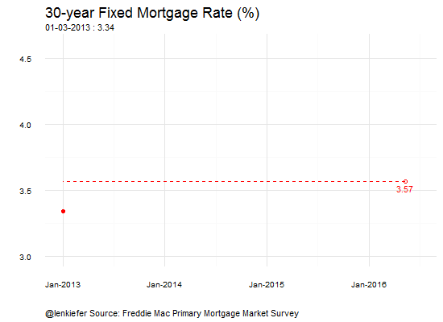

Another mortgage rates animated gif
IN THE PAST I’ve told you how I made my mortgage rates gif. In this post I’m make an extension that uses stop motion techniques to reverse course. We’ll end up with this:

For reference, here’s the standard gif I share each Thursday after mortgage rates come out:

Stop motion animation
While thinking about the week-to-week movements in rates it’s easy to lose longer-term perspective. Rates in the week of May 12, 2016 were the lowest in three years. I decided to tweak my animation to give that perspective.
In order to do so I thought I’d first roll forward in time from the beginning of 2016 and then start rolling backward in time. For the standard gif I fix the scales so that you aren’t disoriented by movement. But when going backward in time I let the scales dynamically adjust so you can feel the range of data change. I also added some rough easing effects by changing the number of weeks between frames, speeding up and slowing down the animation as we move through time.
The code
Here’s the R script to enable the animation:
{% highlight r #Load some data stored in a text file called “pmms30yr” #these data have one column of dates, one column of rates, and helper columns called year and week (week number) pmms30yr <- fread(“pmms30yr.txt”) pmms30yr$date<-as.Date(pmms30yr$date, format=“%m/%d/%Y”)
plot function to draw graph, takes data set as input
myplotf<-function (d){
g<-
ggplot(data=d, aes(x=date,y=rate,label=rate))+geom_line()+
# My favorite minimal theme for gplot2
theme_minimal()+
# add red ball at end of time series
geom_point(data=d[date==max(d$date)],size=2,color=“red”)+
# add open circle at 3.57 on May 12
geom_point(data=d[date==as.Date(“2016-05-12”)],size=2,color=“red”,shape=1)+
# add 3.57 in red text
geom_text(data=d[date==as.Date(“2016-05-12”)],color=“red”,nudge_x=0.25,hjust=-0.2)+
# add dotted red line at 3.57%, laste point
geom_segment(xend=-Inf,x=as.numeric(as.Date(“2016-05-12”)),y=3.57,yend=3.57,color=“red”,linetype=2)+
# set title size
theme(plot.title=element_text(size=18))+
# adjust caption, add breathing room
theme(plot.caption=element_text(hjust=0,vjust=1,margin=margin(t=10)))+
theme(plot.margin=unit(c(0.25,0.25,0.25,0.25),“cm”))
return (g)
}
helper dataset with data since 2013, not necessary & vestigial from how I built this up
dd13<-pmms30yr[year>=2013]$date
Note, I did some counting to figure out which weeks I needed for the animation. Not elegant, but works.
#Run the animation
#Partition data: 2016 YTD, since May 2013, 5 years prior oopt = ani.options(interval = 0.01) saveGIF({ #First standard forward animation (slowed to half place by pausing in J: for (i in 1:19) { for (j in 1:2){ g<-myplotf(pmms30yr[year==2016 & week <=i])+ #Add labels and caption, use subtitle for annotations labs(x=“”, y=“”, title=“30-year Fixed Mortgage Rate (%)”, subtitle=“Mortgage rates decline throughout 2016 reaching a low on May 12…”, caption=“@lenkiefer Source: Freddie Mac Primary Mortgage Market Survey”) ani.pause()} } #Pause for drama for (i2 in 1:8) { print(g) ani.pause() } # Start moving backwards to three years ago: for (i in 1:137) { g<- myplotf(pmms30yr[date>= dd13[157-i]])+ labs(x=“”, y=“”, title=“30-year Fixed Mortgage Rate (%)”, subtitle=“…rates haven’t been this low in three years…”, caption=“@lenkiefer Source: Freddie Mac Primary Mortgage Market Survey”) #annotate(“text”, x=pmms30yr[year==2016 & week==1]$date, y=3.5, #label=“…rates haven’t been\n that low in\n three years.“,color=“red”,hjust=0) print(g) ani.pause() } #Pause for more drama for (i2 in 1:8) { print(g) ani.pause() } #Start moving backwards: # I want to move slowly (by six week increments) faster (13 week) faster (26 weeks) # Then slow down (13 weeks) to (6 weeks) to finally 1 week for (i in c(seq(1,365,6),seq(378,716,13),seq(1145,1574,26),seq(1587,2003,13),seq(2016,2185,6),2196) ) { g<- myplotf(pmms30yr[date>= dd[2353-156-i]])+ labs(x=“”, y=“”, title=“30-year Fixed Mortgage Rate (%)”, subtitle=“…and rates are very low by historical standards”, caption=“@lenkiefer Source: Freddie Mac Primary Mortgage Market Survey”) print(g) ani.pause() } for (i2 in 1:8) { print(g) ani.pause() } },movie.name=“rate_5_14_2016.gif”,ani.width = 575, ani.height = 450) {% endhighlight
And the result: